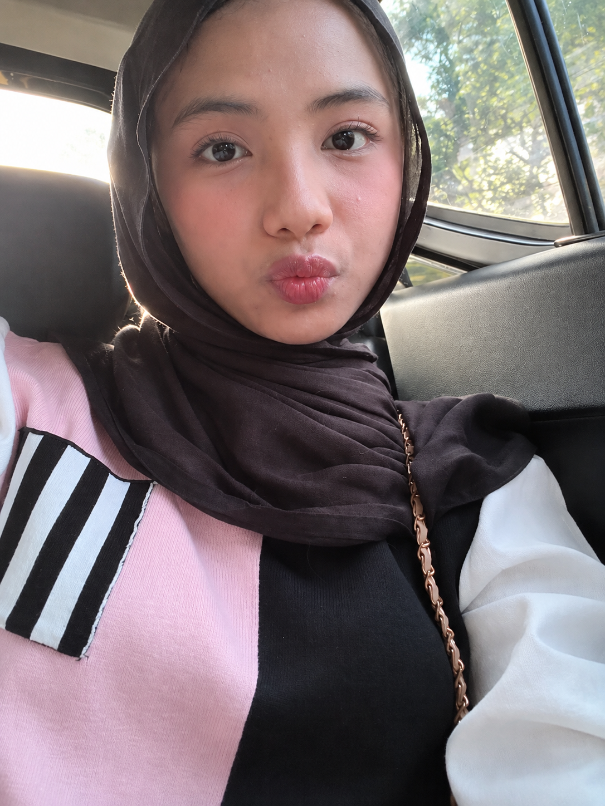
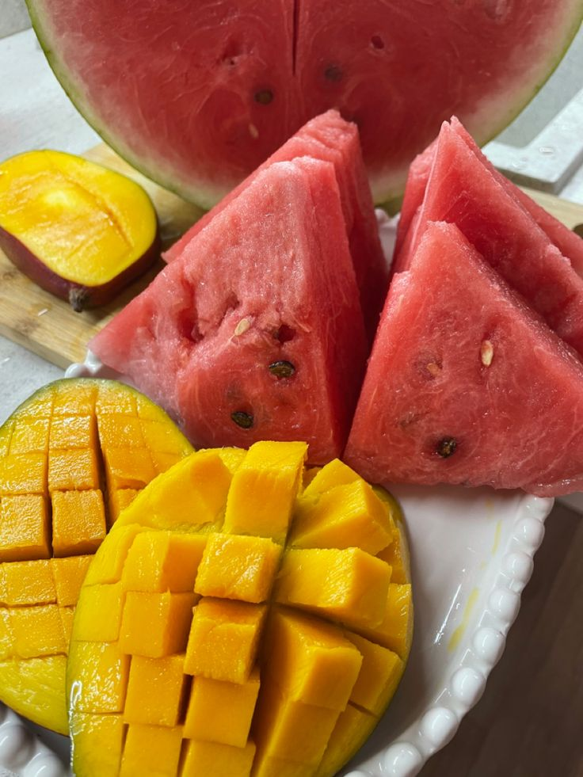
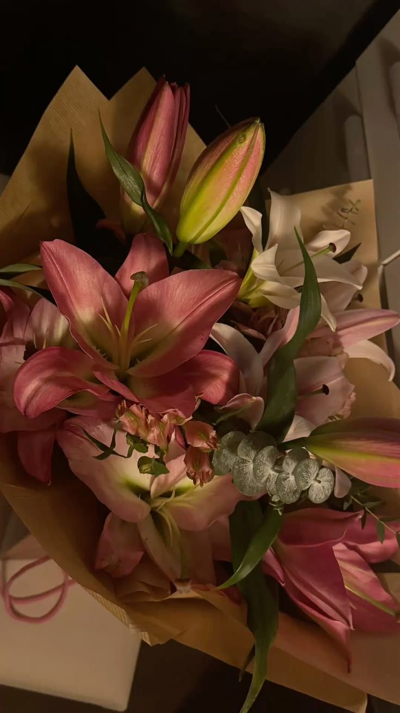
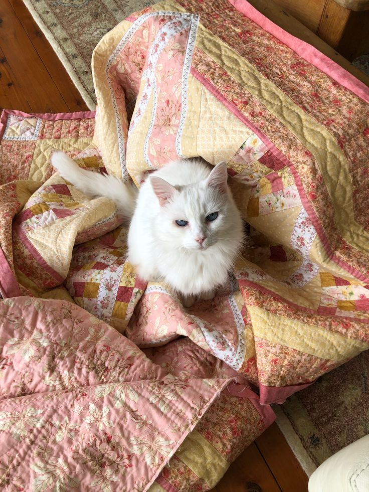
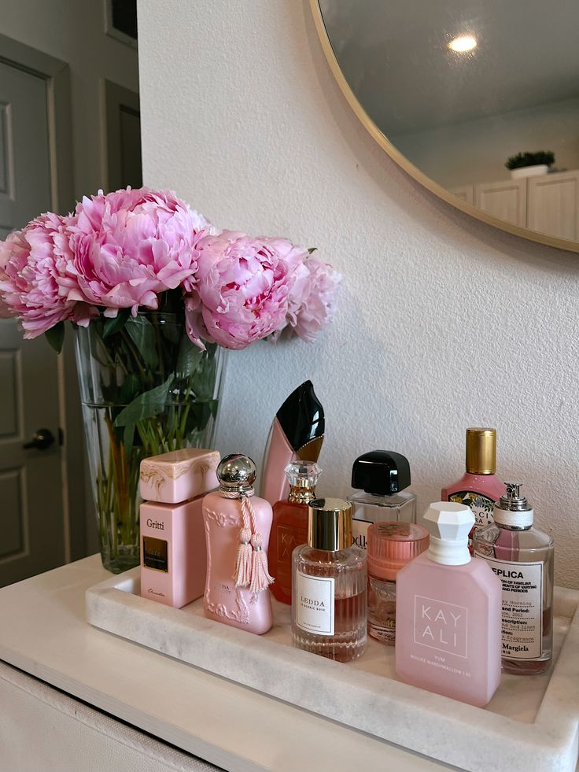
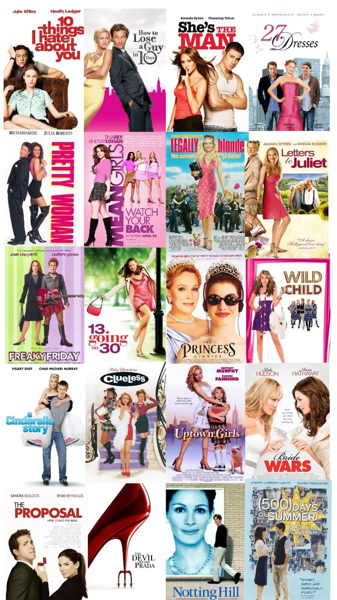
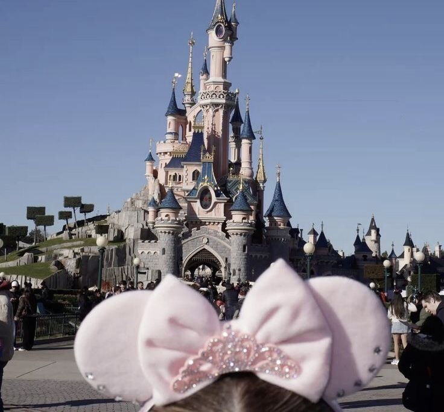
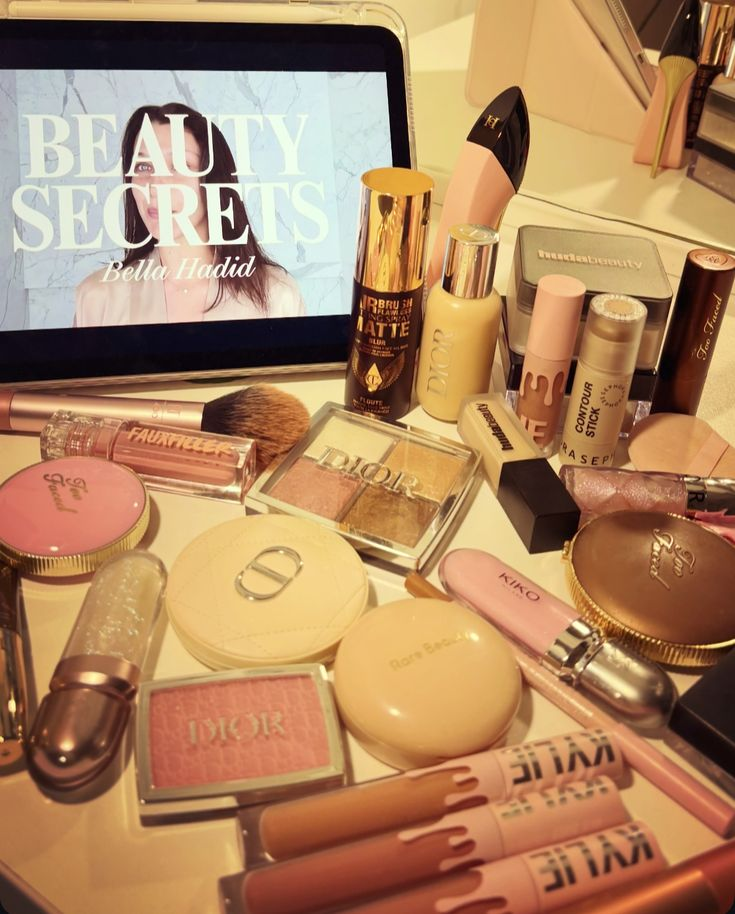
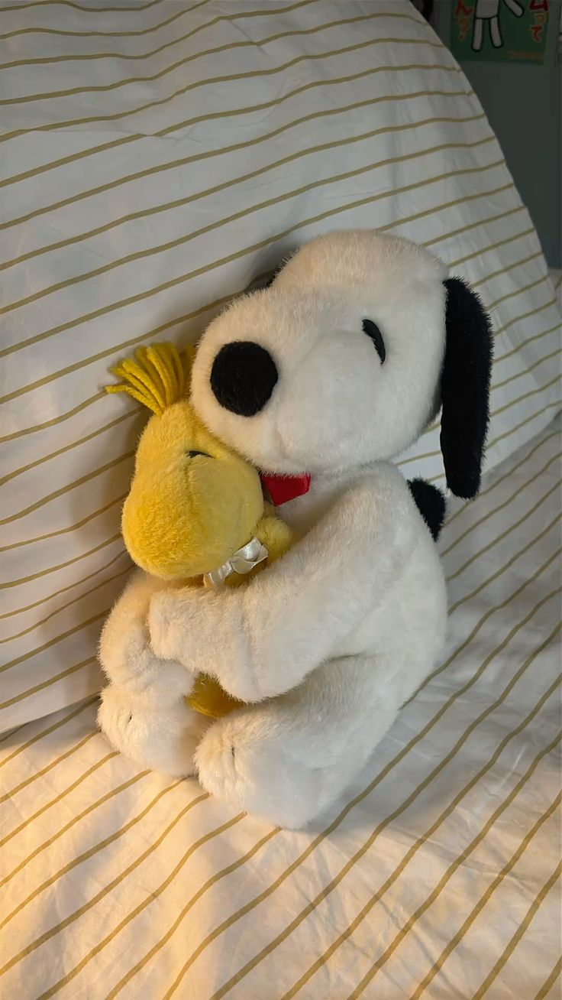
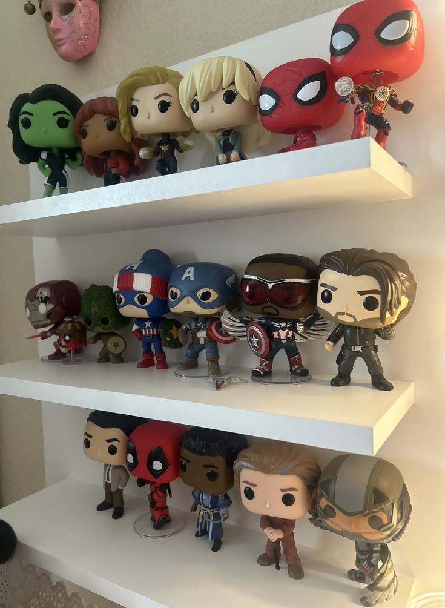

a seafood kind of day
a seafood kind of day✳ welcome to my little corner
A PAGE
OF ME.
a small collection of my favorite things, little joys, and the life i'm dreaming of.
get to know me ↘ made of little things ♡
01 / a little introductionscroll to explore ↓
01 — the girl behind the page
hello, i'm putri.
a little hello from me ♡
A cheerful soul with a head full of dreams and a heart for the little things.
I'm Putri — welcome to my page. This is where I keep little pieces of who I am, the things I love, and the future I'm looking forward to.
full nameRezkya Ananda Putri
nicknamePutri
birthday10 June 2010
personalityCheerful
little hobbyGoing for a walk
dream jobVeterinarian ♡
one day at a time, one dream at a time.
02 — little things i adore
my favorites.
the tiny details that make an ordinary day feel a little sweeter.
a seafood kind of day little sip break
little sip break sweet little treats
sweet little treats chocolate, always
chocolate, always
sunny & juicy
lily in bloom
tiny paws, big love
bloom · flower · fresha few of my very, very favorite things ✿
03 — press play on a feelingside A ♡
putri's
playlist♡
playlist♡
currently in my own little world
playlist.
A little collection of songs picked by me, for the moments that feel like me.
♫
my playlist, my moodyour own little soundtrack
♡
opens my playlist in Spotify · player design made for this page
good songs, good days, little memories.♪ ♡ ♪
04 — the little details
other little things.
a few more things that make my world feel like mine.

romcom movie nightsmovie nights
romcoms, always.
i love romcom movies.

places on my mind
dream destinations
Paris, London & Disneyland.

my little makeup corner ♡beauty & little rituals
makeup.
a little beauty moment, just for me.


forever favorites
snoopy & marvel
two things i love.
05 — a little look into my future
putri's life vision board.
the life i'm dreaming of, the person i'm becoming.
that's a little piece of me